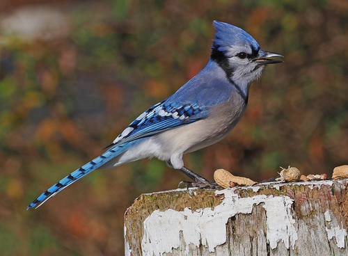

Blue Jay
Cyanocitta cristata bird

Bold parkland corvid; caches acorns and conifer seeds and takes fruit.
5 documented plant relationships.
Cyanocitta cristata bird

Bold parkland corvid; caches acorns and conifer seeds and takes fruit.
5 documented plant relationships.
 Douglas Goldman, some rights reserved (CC BY-SA), uploaded by Douglas Goldman")
 KENPEI, some rights reserved (CC BY)")
 giantcicada, some rights reserved (CC BY), uploaded by giantcicada")
 Terry Woodward, some rights reserved (CC BY), uploaded by Terry Woodward")